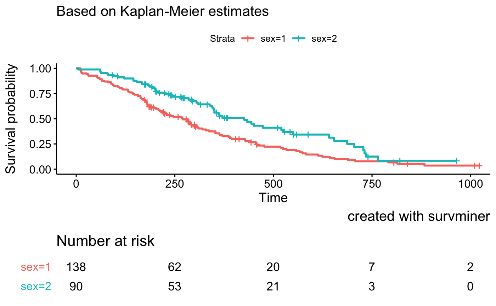

ggsurvtheme.RdDefault theme for plots generated with survminer.
theme_survminer(base_size = 12, base_family = "", font.main = c(16, "plain", "black"), font.submain = c(15, "plain", "black"), font.x = c(14, "plain", "black"), font.y = c(14, "plain", "black"), font.caption = c(15, "plain", "black"), font.tickslab = c(12, "plain", "black"), legend = c("top", "bottom", "left", "right", "none"), font.legend = c(10, "plain", "black"), ...) theme_cleantable(base_size = 12, base_family = "", ...)
| base_size | base font size |
|---|---|
| base_family | base font family |
| font.main, font.submain, font.caption, font.x, font.y, font.tickslab, font.legend | a vector of length 3 indicating respectively the size (e.g.: 14), the style (e.g.: "plain", "bold", "italic", "bold.italic") and the color (e.g.: "red") of main title, subtitle, caption, xlab and ylab, axis tick labels and legend, respectively. For example font.x = c(14, "bold", "red"). Use font.x = 14, to change only font size; or use font.x = "bold", to change only font face. |
| legend | character specifying legend position. Allowed values are one of c("top", "bottom", "left", "right", "none"). Default is "top" side position. to remove the legend use legend = "none". Legend position can be also specified using a numeric vector c(x, y); see details section. |
| ... | additional arguments passed to the function theme_survminer(). |
theme_survminer: Default theme for survminer plots. A theme similar to theme_classic() with large font size.
theme_cleantable: theme for drawing a clean risk table and cumulative
number of events table. A theme similar to theme_survminer() without i)
axis lines and, ii) x axis ticks and title.
# Fit survival curves #++++++++++++++++++++++++++++++++++++ require("survival") fit<- survfit(Surv(time, status) ~ sex, data = lung) # Basic survival curves #++++++++++++++++++++++++++++++++++++ ggsurv <- ggsurvplot(fit, data = lung, risk.table = TRUE, main = "Survival curves", submain = "Based on Kaplan-Meier estimates", caption = "created with survminer" ) # Change font size, style and color #++++++++++++++++++++++++++++++++++++ # Change font size, style and color at the same time # Use font.x = 14, to change only font size; or use # font.x = "bold", to change only font face. ggsurv %+% theme_survminer( font.main = c(16, "bold", "darkblue"), font.submain = c(15, "bold.italic", "purple"), font.caption = c(14, "plain", "orange"), font.x = c(14, "bold.italic", "red"), font.y = c(14, "bold.italic", "darkred"), font.tickslab = c(12, "plain", "darkgreen") ) # Clean risk table # +++++++++++++++++++++++++++++ ggsurv$table <- ggsurv$table + theme_cleantable() ggsurv